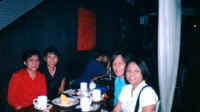
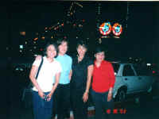
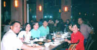

From: May
Date: Mon Nov 4, 2002 1:44 pm
Subject: Thanks
Hello everyone,
I am back to work after a most exhausting but enjoyable vacation in Manila. It was good to see some of you. I had a great time at the Fort and then at Eastwood. Salamat. Nakaka-impress ang mga gimmick places natin dyan. Salamat sa mga updates.. lalo na about Philippine politics ...Bobot, bilib ako!
Delta, Connie and Tes.. yes, let's plan on that Subic trip... next year?!!!!, hopefully! Thank you very much!. I look forward to seeing you here in the East Coast.
Ed J - sorry wala akong kwento!
Ariel- kumusta sa family!
Raul- you still owe us dinner. I will come back for it!
Ben T. - nice "texting" with you. Mabilis- bilis na ko ngayon. Sorry at nahilo ka sa kakasunod sa amin. See you next time.
Everyone- If I did not see you there, I hope to see to you here... when you visit the East Coast.
Al - my sister cancelled her trip to New York... napagod sa amin. So I guess I won't be seeing you this weekend. How about spending Thanksgiving here? Tell Nina and the rest. I will call you.
Got to get back to work. I am swamped. Have a nice day everyone!
-may
Click on the picture to view a bigger picture
  
From: May
Date: Mon Nov 4, 2002 1:49 pm
Subject: Re: [qcshs-75] May in Manila
Tesz,
Thanks for the photos. Ang bilis mo! Thanks again for everything. Sayang nahuli ako sa Subic trip. Maybe next year!!!???. I will post my version of these pictures tomorrow.
mag schedule ka naman ng trip dito sa VA!
Thanks again!
-may
(report problems/comments to qcshs75@yahoo.com email group= qcshs75@GoogleGroups.com)
{kind=link}
{kind=link}
{kind=link}
{kind=link}
{kind=link}
{kind=link}